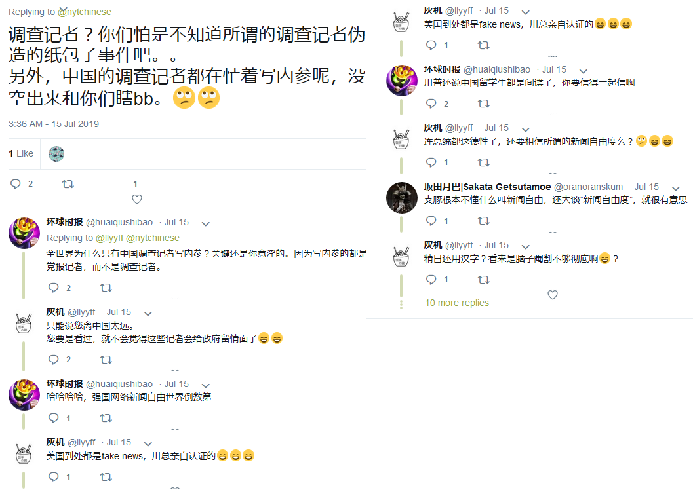
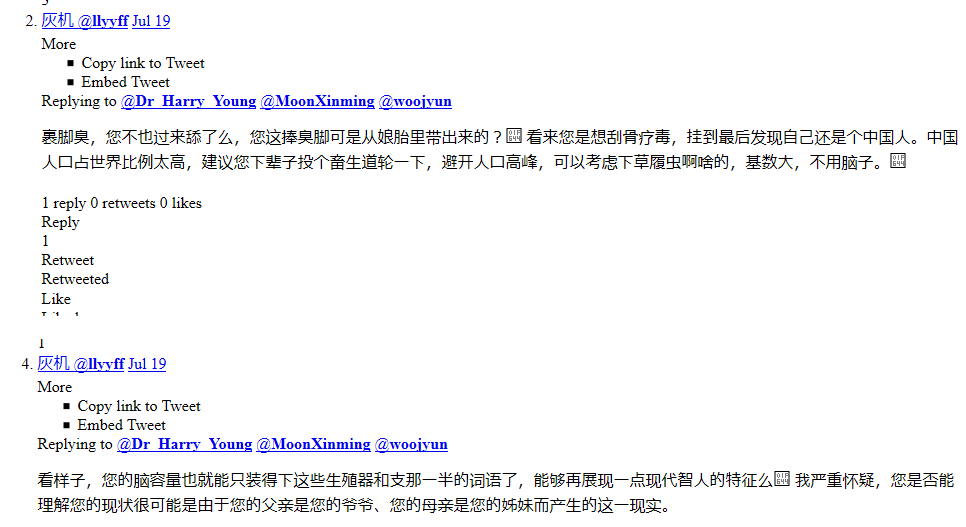
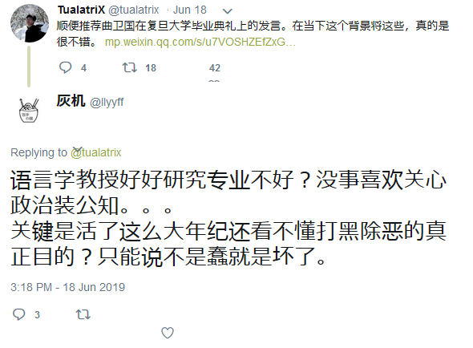
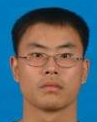

主要事迹 黑屁调查记者    
(备注：uid=183655865，曾用：@llyyff) 学校 华中科技大学
(备注：生命科学与技术学院，生物信息技术专业本科，班级：生物信息技术200504班，学号：012004011308，入学日期：20040901，毕业日期：20090630，毕业证编号：104871200905005641) 学校 武汉理工大学
(备注：土木工程专业硕士研究生，学号：1049721402556，入学日期：20140901，报考点：华中科技大学报考点，报考号：420492945，报考单位：武汉理工大学，报考专业：土木工程，录取分数：单独考试数学133分、工程项目管理127分、政治理论60分、外国语英语77分，预计毕业日期：20190130，学籍状态：在籍，截至发稿前日期：20190724)
SCP-ZHINA-2019-62(刘宇飞)
录入：2026-09-26#人物 #文章 #概念